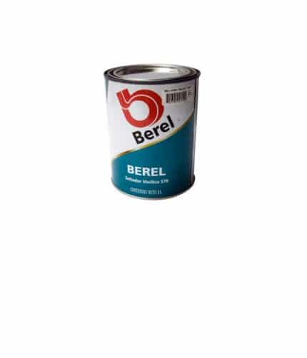
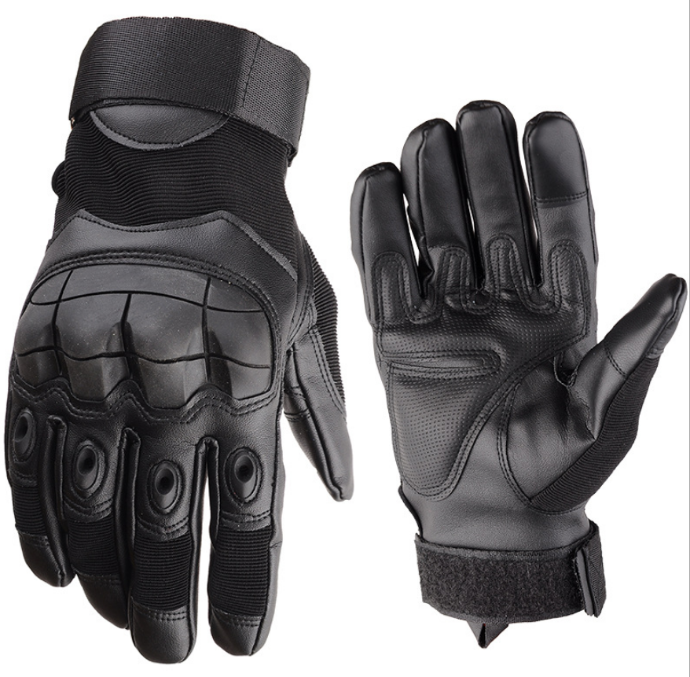
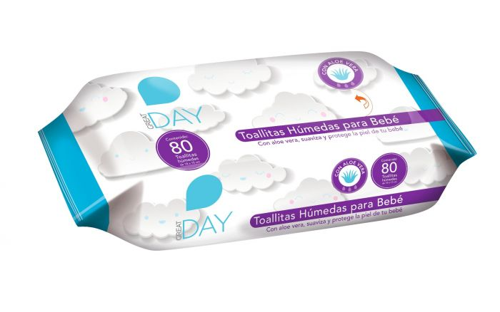
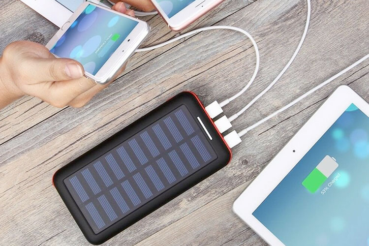
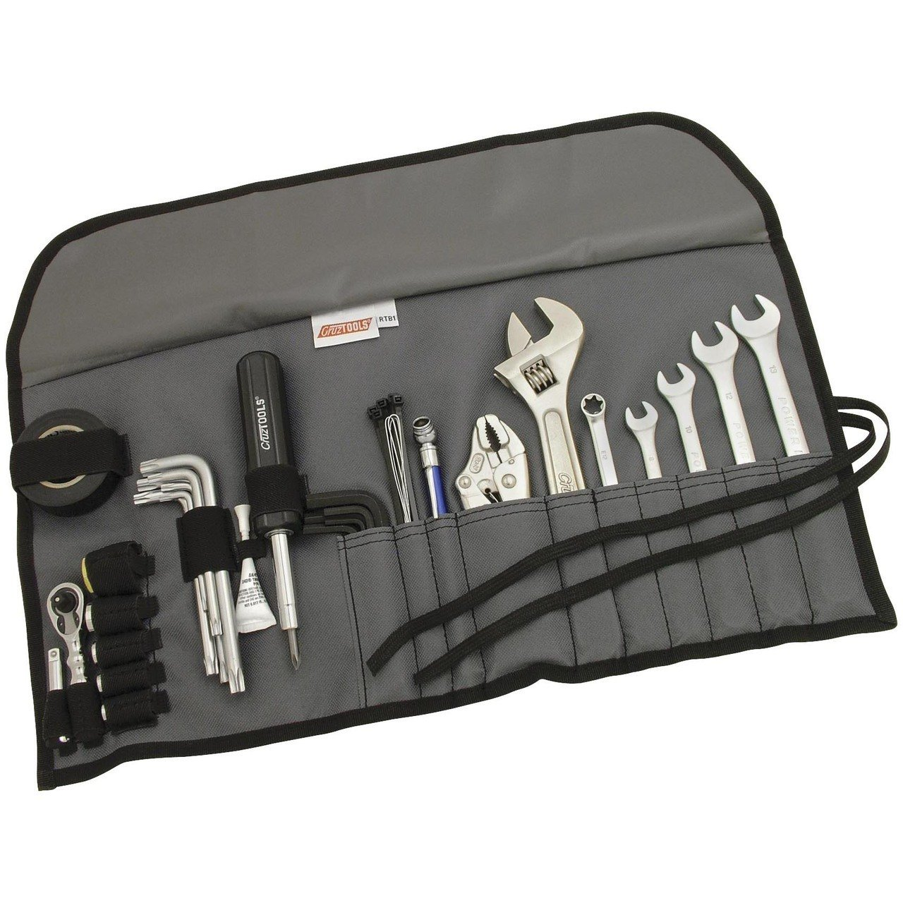
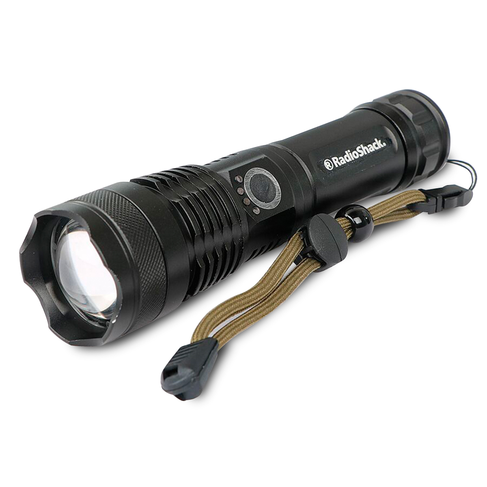
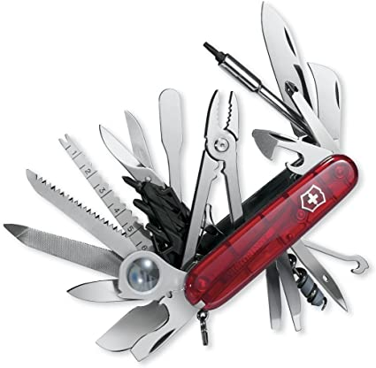
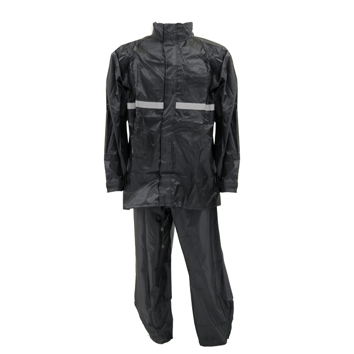
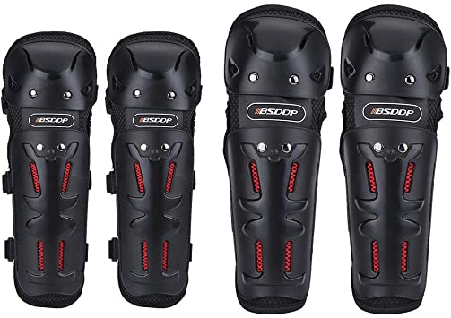
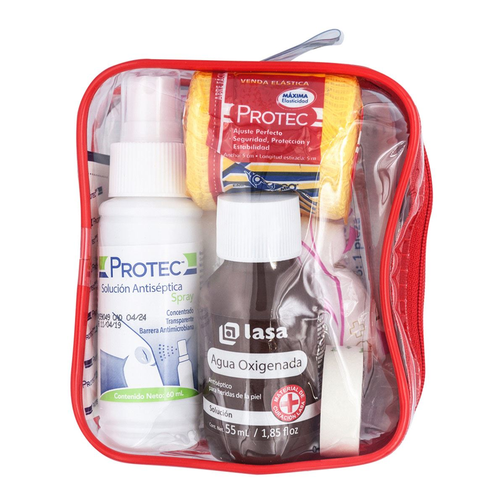

| --Accesorios-- | |||||
| Lata selladora de llantas 
Los clavos, tornillos y metales filosos siempre abundan en las carreteras y terracerias;
pero un sellador de llantas para moto te puede ayudar a llegar a un lugar donde reparar
tu llanta. Ademas ocupa poco espacio de tu maleta.
|
Guantes para moto de repuesto  ¿Alguna vez has manejado en el frió sin guantes? Siempre hay posibilidades de que pierdas uno o ambos guantes en la rodada, llevar un par te hará el paro. |
||||
| Toallitas húmedas  |
Batería extra para el celular (cargada) ´
Afortunadamente tenemos celular para comunicarnos casi en cualquier lugar; desafortunadamente,
su pila no es infinita y podrías morirse cuando más la necesitas.
|
||||
| Herramienta para moto básica 
Procura llevar un pequeño kit de herramienta para meterle mano a tu moto en caso de que
sea necesario. Te recomendamos llevar herramienta por lo menos para cambiar una llanta o cadena.
|
Lámpara 
Además de ayudarte a ver en la noche; también puede ayudar a otras personas a verte en la noche,
por ejemplo, si estuvieras parado junto a la carretera de noche.
|
||||
| Navaja suiza 
Esperamos que el creador de esta maravilla tenga un lugar en el cielo; con ellas
podemos: cortar, rebanar, apretar tornillos, sacar espinas, etc. Uno de los accesorios
para biker que nunca nos debe faltar.
|
Impermeable 
Consigue un impermeable que ocupe poco espacio de tu maleta; dale más prioridad a este
accesorio cuando es verano y las posibilidades de que llueva son muy altas.
|
||||
| Rodilleras  |
Kit de primeros auxilios 
Este es uno de los accesorios para biker que casi nadie lleva a sus viajes; procura llevar
cosas básicas como pastillas, vendas, gasas y alcohol.
|
||||